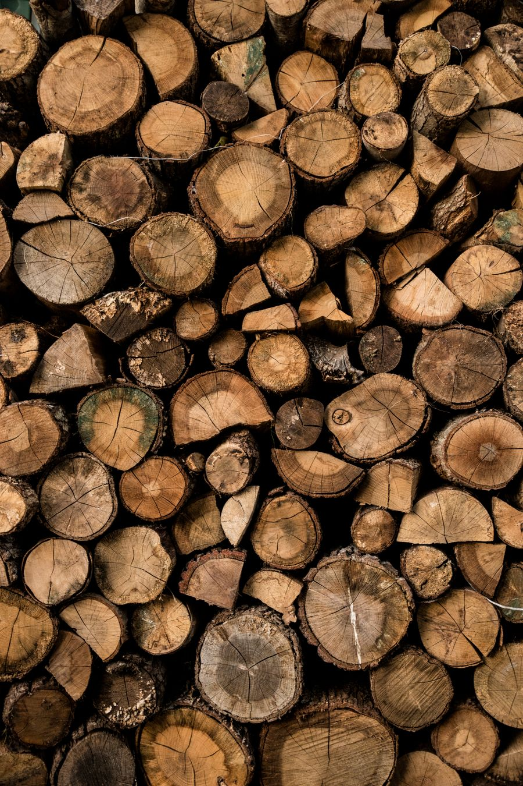
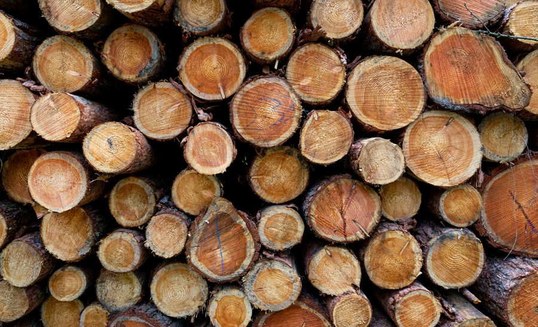
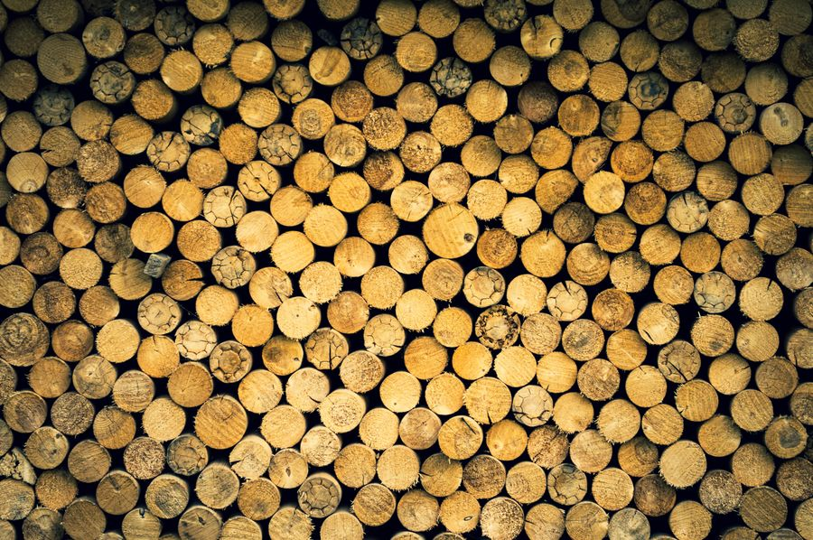
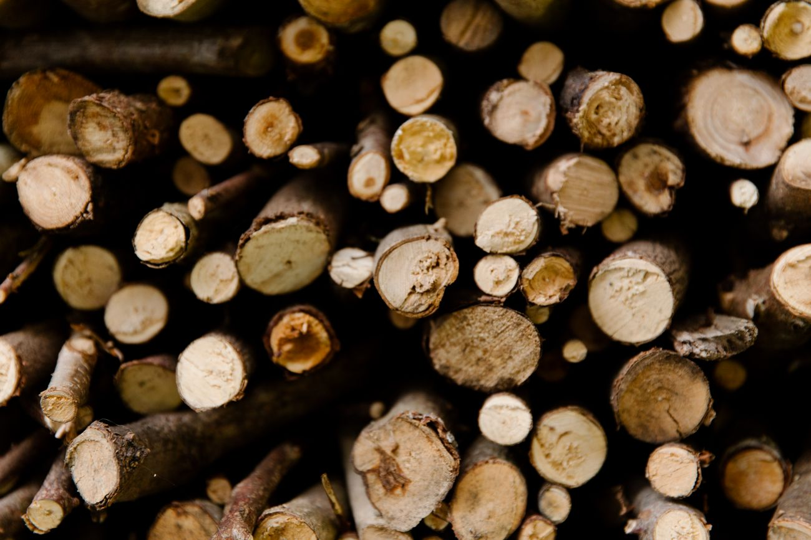

BUKEV01 / 03
Bukova drva
Priljubljena izbira za enakomerno toploto in vsakodnevno ogrevanje.
Trd lesEnakomerna toplota
Povprašaj za ponudbo Trije primeri ponudbe. Fotografije prikazujejo drva, ne dokazujejo pa točne vrste lesa ali konkretne zaloge.

BUKEVPriljubljena izbira za enakomerno toploto in vsakodnevno ogrevanje.

HRASTTrši les, ki pri primerni pripravljenosti zagotavlja dolgo žerjavico.

MEŠANICAPrilagodljiva kombinacija različnih vrst lesa za različne potrebe.
Razprite posamezno vrsto lesa in si oglejte fotografijo ter najpomembnejše informacije. Fotografije so ilustrativne.
Pogosta izbira za redno ogrevanje. Pred nakupom preverite suhost lesa, dolžino polen in način merjenja količine.
Povprašaj za bukova drvaTrd les, ki je znan po dolgotrajni žerjavici. Posebno pomembno je primerno sušenje, saj je za učinkovito kurjenje potrebna ustrezna vlažnost.
Povprašaj za hrastova drvaKombinacija različnih vrst lesa. Pred naročilom je dobro vprašati, katere vrste so v mešanici in v kakšnem razmerju.
Povprašaj za mešana drvaTo je informativni prikaz, ne podatek o dejanski zalogi, stanju ali ceni drv.
Vzorčni izračun za zložena drva v prostorninskih metrih (prm). Vrednosti niso dejanski cenik.
Bukova drva · 3 prm
* Vse navedene cene (110, 125, 90 €/prm ter 25, 49 € za prevoz) so izmišljeni primeri. Ne predstavljajo dejanske ponudbe, tržne cene ali končne cene z davki. Pri resničnem podjetju bi jih zamenjali s potrjenim cenikom in resničnimi območji dostave.
Pri dejanskem nakupu vprašajte za dolžino polen, vlažnost, drevesno vrsto in natančno mersko enoto.

Majhne podrobnosti naredijo veliko razliko.
Obe vrsti sta trd les. Razlike pri ogrevanju so odvisne tudi od vlažnosti, velikosti polen in vrste kurilne naprave.
Prostorninski meter zloženih drv (prm) ni enak kubičnemu metru polnega lesa. Vedno preverite uporabljeno mersko enoto.
To je odvisno od zaloge in načina priprave ponudnika. Pri realnem povpraševanju navedite svojo želeno dolžino.
Kalkulator vsebuje izmišljene vzorčne cene. Pri resničnem ponudniku mora biti posebej pojasnjeno, kaj je vključeno v ceno in koliko stane prevoz.